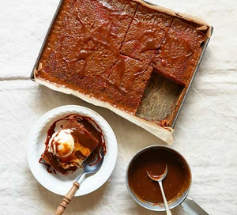

Go Back to Index Page

Author: Barney Desmazery
Prep: 35 min
Cook: 45 min plus soaking
Difficulty: More Effort
Serves: 10-12
Description:
What's more inviting than a sticky toffee pudding? Our recipe delivers on expectations, with a lovely sticky sponge, true toffee flavour and a light sponge.
Ingredients:
- 200g butter, softened, plus extra for the tin
- 300g stoned dates (prepared weight)
- 1 tsp bicarbonate of soda
- 1 tsp vanilla extract
- 100ml dark rum (optional)
- 100g pecans, broken into large chunks or roughly chopped
- 225g light muscovado sugar
- 4 eggs
- 225g self-raising flour
- 1 tsp mixed spice
- 1 tsp ground ginger
- vanilla ice cream, double cream or clotted cream, to serve
For the Sauce:
- 150g light muscovado sugar
- 50g butter
- 1 tbsp treacle
- 200ml double cream
Steps:
- Butter a medium rectangular baking tin (roughly 30 x 20cm, and at least 5cm deep) and line with baking parchment. Tip the dates into a heatproof bowl with the bicarb and vanilla, then pour over the rum, if using, and 200ml kettle-hot water. (If omitting the rum, use 300ml water.) Leave to soak for 30 mins. Meanwhile, toast the pecans in a dry pan over a medium heat for 6-8 mins until nutty and starting to brown a little. Remove from the heat and set aside.
- Heat the oven to 190C/170C fan/gas 5. Tip the dates and their soaking liquid into a food processor and pulse until roughly chopped. Tip half back into the bowl, then blitz the rest to a smooth purée. Pour this over the roughly chopped dates in the bowl.
- Tip the butter and sugar into a bowl and beat using an electric whisk or for 3-5 mins until fluffy. Or, do this in a stand mixer. Beat in the eggs, one at a time, then fold through the flour, spices and a large pinch of salt. The batter will be thick. Fold through the date mixture and pecans, then scrape everything into the prepared tin. Level the surface with a spatula and bake for 30-35 mins until just set and a skewer inserted into the middle comes out clean.
- While the pudding bakes, make the sauce. Tip the sugar, butter and treacle into a saucepan and warm over a medium heat, stirring continuously until the sugar has dissolved and the butter has melted. Bubble for 3 mins until the mixture is thick. Stir in the cream and simmer, stirring, for 2 mins until you have a dark toffee sauce. About 10 mins before the end of the pudding cooking time, remove it from the oven, drizzle half the sauce over and spread out with a spatula to cover. Bake for 6-8 mins more until the sauce is bubbling. Leave to cool slightly, then serve hot or just warm with ice cream, double cream or clotted cream, with the remaining sauce poured over.
Go Back to Top